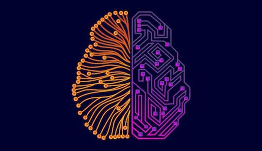
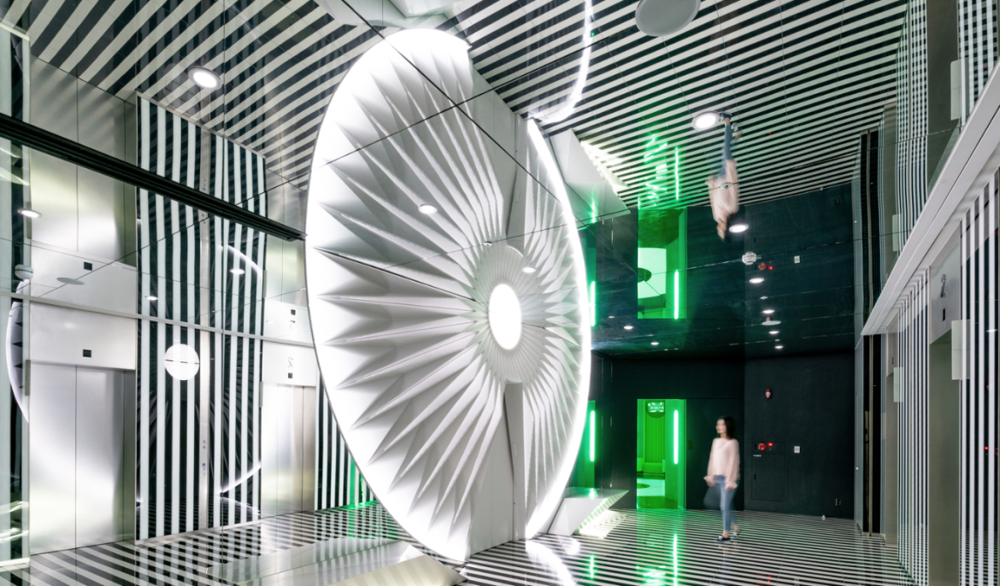
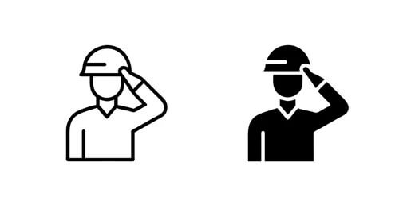
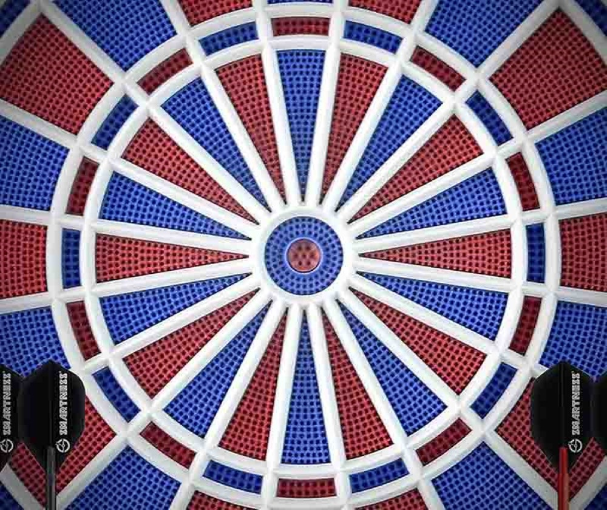
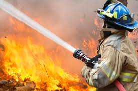

IA + Robótica
NeuroRobotics (BCI + Robótica)
- Control de robots mediante señales cerebrales
- Aplicación en rehabilitación neurológica
- Potencial en programas europeos de salud digital
Encaje UE: Salud, inclusión y deep tech

HIGÍA
HIGÍA — Robot Social Asistencial
- Asistencia a personas mayores y dependientes
- IA conversacional + monitorización + apoyo diario
- Integración con sistemas sanitarios
Impacto:
- Reducción de carga asistencial
- Mejora de autonomía personal
- Aplicación directa en envejecimiento activo

SMART CULTURAL SYSTEMS
Smart Cultural Systems
- Entornos museísticos inteligentes
- Interacción mediante voz, móvil e IA
Valor europeo:
- Accesibilidad universal
- Digitalización del patrimonio

SMARTCAD
SmartCAD — Cajón de Arena Digital
- Plataforma avanzada de simulación táctica
- Planificación colaborativa en tiempo real
- Entornos distribuidos y conectados
Aplicaciones:
- Defensa
- Emergencias
- Formación avanzada

SMARTDIANA
SmartDiana — Sistemas de entrenamiento inteligente
- Dianas automatizadas con analítica de datos
- Simulación de escenarios reales
Beneficios:
- Mejora de rendimiento
- Optimización de recursos

FIRE CONTROL
SmartFireControl — Gestión Inteligente de Incendios Forestales
- Plataforma de planificación y coordinación en tiempo real
- Integración de datos geoespaciales, meteorológicos y operativos
- Soporte a la toma de decisiones en emergencias
Impacto: mejora de la seguridad, eficiencia operativa y protección medioambiental